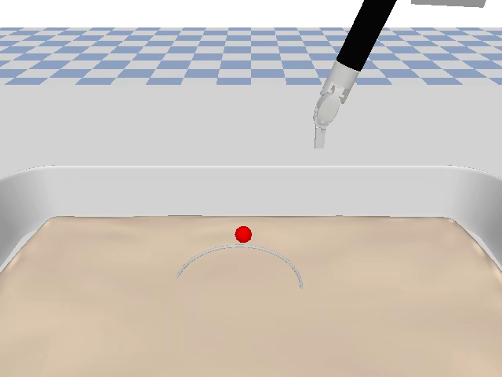

01 独立研究项目 · SurRoL NeedlePick
让视觉真正落到
抓取点上
我在 SurRoL 手术机器人仿真中研究一个具体问题：机器人怎样从图像中找到手术针上的正确抓取位置，并把视觉判断转化为稳定的闭环动作。
项目覆盖数据生成、模仿学习、VLA 微调、视觉定位、RGB-D 伺服与严格评测。当前已经建立完整实验链路，并形成了“高层策略 + 局部几何 + 安全闭夹”的分层方案。
完整研究链路已建立
局部视觉闭环已验证
跨场景泛化进行中

01Visual perception双目 / 腕部 RGB-D
02Closed-loop control最后几毫米精细修正
Research question研究问题
精细抓取并不只需要“看见手术针”。模型还必须判断针上的哪一点适合抓取，并在机械臂移动、遮挡和深度扰动下持续更新这一判断。
这个项目没有把所有问题压进一个成功率，而是依次验证控制上限、物理抓取范围、视觉定位误差和闭环稳定性。每一步都保留固定数据划分、逐回合记录和可复核结果。
02 Research progression
从“能不能完成”，到“怎样稳定完成”
研究路线随着证据逐步收敛：先证明任务可学，再定位视觉瓶颈，最后把有效模块组合成可验证的局部闭环。
01
Control baseline
建立控制上限
使用 11 维仿真状态训练 Deterministic State-Only ACT。三个训练种子在固定 final 场景上完成 135/150 次任务，平均成功率 90%。
结论：任务动力学和控制映射本身可以学习。02
Failure isolation
把问题定位到视觉几何
通过 SmolVLA、相机几何、抓取盆地和 hold-open 实验，逐步排除随机噪声、数值精度和夹爪解码等解释。
结论：关键在于针上语义抓取点的精确定位。03
Hierarchical solution
形成分层闭环方案
将局部残差定位、传感深度和目标位置滤波结合，在相同配对条件下把严格达标率从 54/84 提升到 83/84。
结论：显式几何与闭环控制能够显著改善姿态偏移场景。03 System design
一条完整的研究链路
从仿真数据到模型训练，再到闭环评测和失败回放，所有环节都在同一套实验协议下衔接。
生成、校验、回放和 LeRobot 转换
状态基线、高层策略与动作预测
抓取点、传感深度与空间表征
目标滤波、对齐判断与闭夹许可
04 Evidence
结果按证据等级呈现
状态基线、物理验证和视觉闭环回答的是不同问题，因此分别报告，不把它们混写成一个数字。
实验结果说明
State-Only ACT90.0%
准确状态下的控制基线；证明任务可学，不代表视觉性能。
新定位 + 传感深度83/84
局部接管、三种子配对闭环；当前最佳开发方案。
物理抓取盆地8232/8240
验证针在一定位置与姿态误差内仍可稳定抓取和抬升。
端到端 SmolVLA完成 pilot
工程链路已跑通；结果推动项目转向更适合精细操作的分层控制。
当前结果来自 SurRoL / PyBullet 仿真研究。局部闭环尚需扩大场景并接回完整任务，不外推为真实临床性能。
05 What this project demonstrates
这个项目展示的不只是一组模型结果
我独立完成了从问题定义、实验设计、工程实现到证据复核的全过程，并在实验不符合预期时继续缩小问题，而不是只保留最好的数字。
系统工程
打通仿真、数据、训练、推理服务器、闭环控制和回放分析。
实验设计
使用多训练种子、固定数据划分、配对条件和分级评测减少结论偏差。
研究判断
从端到端策略转向分层系统，并用实验说明为什么需要这一变化。
可复核性
保存逐回合轨迹、模型与数据哈希、失败案例和机器可读报告。